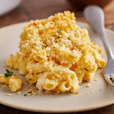

Mac and Cheese

Delicious and cheese lover Mac and Cheese.
Ingredients
- Macaroni
- Butter
- Flour
- Whole Milk
- Cheddar and Parmesan Cheese
- Salt and Pepper
- Bread crumbs
Steps
- Boil the macaroni in salted water until the noodles are al dente. Drain and transfer to a prepared baking dish.
- Melt butter, then whisk in the flour. Whisk in the milk, bring to a simmer, and stir in the cheeses. Season with salt and pepper and continue simmering until the sauce is thick. Pour the sauce over the noodles and stir.
- Melt two tablespoons of butter in a skillet, add the bread crumbs, and toast until the crumbs are brown. Spread the topping over the macaroni and cheese, then sprinkle with paprika.
- Bake in the preheated oven until the topping is golden brown.